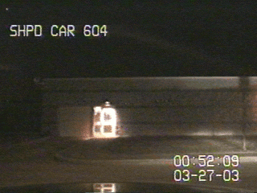

Le météore de Park forest filmé par la caméra
d'une voiture de police

Plusieurs personnes dans l'Aude et dans les Landes sont témoins de la chute très
rapide et silencieuse d'une boule verdâtre S'agissant vraisemblablement d'une rentrée atmosphérique, l'observation a été classée BSEPRA: PAN classé B.
À Aurignac (Haute Garonne), observations périodiques de sources
lumineuses, de faisceaux lumineux éclairant la maison du témoin et de plusieurs "atterrissages" Toutes les investigations ménées n'ont pas permis de corroborer les dires du témoin, et aucune trace n'a pu être relevée sur les lieux des atterrissages présupposés. L'attitude des éventuels autres témoins ainsi que de son épouse fait douter de la crédibilité de ce témoignageSEPRA: PAN classé B.
À Park Forest (banlieue de Chicago), Robert Gaza dort
profondément dans son lit. Soudain une météorite traverse le toit de sa maison, se brise en 2 et passe par le
plafond de sa chambre. Le plus petit des 2 morceaux (178 g) traverse la fenêtre tandis que le second (2,333 kg)
rebondit dans la pièce, cassant l'abat-jour, le miroir et s'arrête près du garçon âgé de 14 ans. Le météore a
explosé au-dessus des quartiers de Park Forest, Matteson et Steger. Des bâtiments, des voitures ont été endommage
par les impacte, personne n'a été blessé.